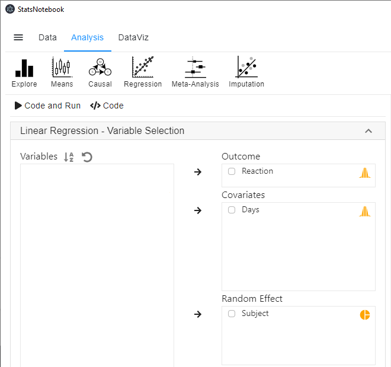
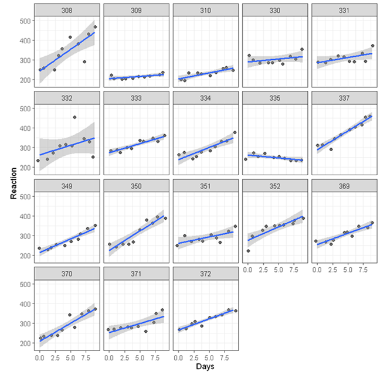
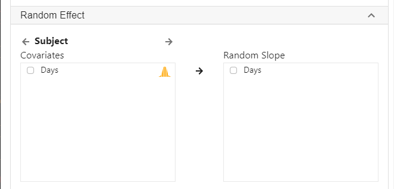
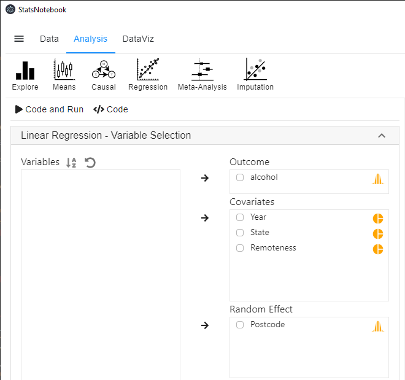
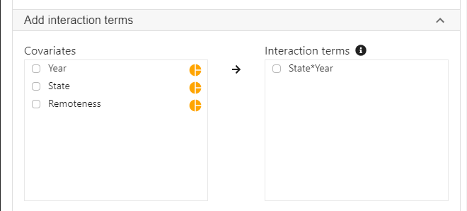
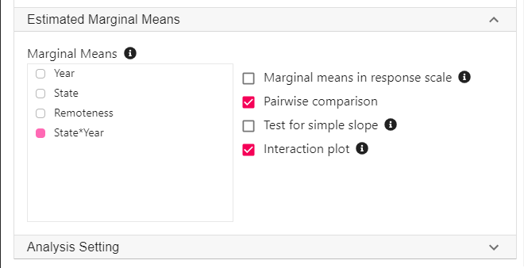
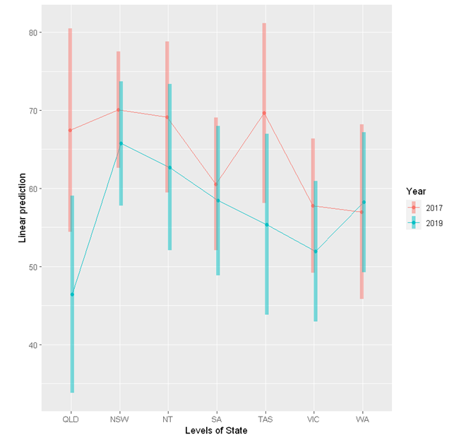

Tags: Analysis, R code, Linear model, Regression
Data with multilevel (hierarchical) structure are common in many area of research. In our tutorial on moderation analysis, we examine the impact of increasing alcohol tax in Queensland on alcohol consumption. We compared changes in alcohol consumption for individuals from Queensland before and after the implementation of tax increase, compared to changes in alcohol consumption in other states. The data were collected from individuals from different postcodes in different states. Therefore, individual observations are nested within postcodes. Since it is likely that individuals from the same postcodes are more similar compared to individuals from different postcodes (because of similar local drinking culture, similar level of exposure to local advertisement, etc), the assumption of independent observation is likely to be violated. Linear mixed model (also known as multilevel model and random effect model) can be used to account for the dependencies in the data.
Other examples of data with nested structure include
In this tutorial, we will look at two examples
Belenky et al (2003) studied the relationship between sleep deprivation and reaction time. We have included their data in StatsNotebook as the Sleep dataset. See load example data for instruction on loading the data into StatsNotebook.
There are three variables in this dataset.
Does the number of days of sleep deprivation affect reaction time?
It is tempting to address this research question by a simple linear regression (or a correlation analysis). However, linear regression is not appropriate because the data is not independent - Reaction time measured from the same participant are likely to be more similar to reaction time measures across participants.
In this analysis, we will run two separate models - a random intercept model and a random slope model. Prior to running these models, it is always good practice to visualise the data and conduct descriptive analysis.
We can account for the dependencies in the data by including a random intercept for each individual. To run this model,

library(lme4)
library(lmerTest)
res <- lmer(Reaction ~ Days + (1 | Subject),
data = currentDataset)
summary(res)
confint(res, level = 0.95, method = "Wald")
res.std <- resid(res)/sd(resid(res))
plot(res.std, ylab="Standardized Residuals")
"Outlier Test. Observations with a Bonferroni p < .05 might be considered as outliers and might need further investigation."
car::outlierTest(res)
car::infIndexPlot(res)
ggplot(as.data.frame(res.std), aes(sample = res.std)) +
geom_qq() +
geom_qq_line()
"Chan, G. and StatsNotebook Team (2020). StatsNotebook. (Version 0.1.0) [Computer Software]. Retrieved from https://www.statsnotebook.io"
"R Core Team (2020). The R Project for Statistical Computing. [Computer software]. Retrieved from https://r-project.org"
The following are from the top section of the generated codes.
library(lme4)
library(lmerTest)
res <- lmer(Reaction ~ Days + (1 | Subject),
data = currentDataset)
summary(res)
confint(res, level = 0.95, method = "Wald")
These codes tell R to run a linear mixed model using the lmer from the lme4 library. The left side of the “~” symbol specifies the dependent variable; the right side specifies days as the independent variable. The code (1 | Subject) specifies a random intercept for each participant. The summary function is used to print out the results from the random intercept model and the confint function is used to print the model coefficients with the corresponding 95% confidence intervals.
The following is the model summary from the above codes.
Linear mixed model fit by REML. t-tests use Satterthwaite's method [
lmerModLmerTest]
Formula: Reaction ~ Days + (1 | Subject)
Data: currentDataset
REML criterion at convergence: 1786.5
Scaled residuals:
Min 1Q Median 3Q Max
-3.2257 -0.5529 0.0109 0.5188 4.2506
Random effects:
Groups Name Variance Std.Dev.
Subject (Intercept) 1378.2 37.12
Residual 960.5 30.99
Number of obs: 180, groups: Subject, 18
Fixed effects:
Estimate Std. Error df t value Pr(>|t|)
(Intercept) 251.4051 9.7467 22.8102 25.79 <2e-16 ***
Days 10.4673 0.8042 161.0000 13.02 <2e-16 ***
---
Signif. codes: 0 '***' 0.001 '**' 0.01 '*' 0.05 '.' 0.1 ' ' 1
Correlation of Fixed Effects:
(Intr)
Days -0.371
######################################################
2.5 % 97.5 %
.sig01 NA NA
.sigma NA NA
(Intercept) 232.301892 270.50832
Days 8.891041 12.04353
From the fixed effects section of the model summary, we can conclude that there is strong evidence that number of days of sleep deprivation significantly increased reaction time under a significance level of 0.05. On average, for each additional day of sleep deprivation, the reaction time increased by 10.47ms (b = 10.47, SE = 0.80, p < .001).
Fixed effects:
Estimate Std. Error df t value Pr(>|t|)
(Intercept) 251.4051 9.7467 22.8102 25.79 <2e-16 ***
Days 10.4673 0.8042 161.0000 13.02 <2e-16 ***
---
Signif. codes: 0 '***' 0.001 '**' 0.01 '*' 0.05 '.' 0.1 ' ' 1
We are 95% confident that the average increase was between 8.89 and 12.04.
2.5 % 97.5 %
.sig01 NA NA
.sigma NA NA
(Intercept) 232.301892 270.50832
Days 8.891041 12.04353
In the above, we estimate that the average intercept across all participants is 251.4. Results from the random effects section below show that the variance of the intercept for Subject is 1378.2. Taking the square root, the standard deviation of the intercept is thus 37.1.
Random effects:
Groups Name Variance Std.Dev.
Subject (Intercept) 1378.2 37.12
Residual 960.5 30.99
Number of obs: 180, groups: Subject, 18
We can calculate the 95% coverage interval as 251.4 ± 1.96*37.1. The lower bound of the 95% coverage interval is thus 178.7 and the upper bound is 324.1. We therefore estimated that 95% of the participants have an intercept between 178.7 and 324.1. This means that 95% of the participants have a reaction time between 178.7 and 324.1 at Day 0. This is not to be confused with the 95% confidence interval of the intercept. The 95% confidence interval is (232.3, 270.5), and this indicates that we are 95% confident that the average intercept is somewhere between 232.3 and 270.5.
In this model, we have accounted for the repeated measures design (observations nested within individuals) by including a random intercept for each participants. Each individual has his/her own intercept. The effect of sleep deprivation on reaction time is assumed to be the same across individuals. This assumption can be relaxed by fitting a random slope model.
Before running the random slope model, we can store the estimates from the random intercept model into a variable for future model comparison. By default, StatsNotebook stores the model estimates into the variable res. We now store these estimates into the variable m1. Enter the following code into a new block on the right panel and run it. This line of code must be run right after running the random intercept model.
m1 <- res
In the random intercept model, we assume that the effect of sleep deprivation on reaction time is the same across individuals. The following shows the scatterplot between reaction time and days of sleep deprivation for each participants.

While for most of the participants, the association is positive (the line of best fit going up towards the top right corner of each plot), there is substantial variations - For some participants, the effect of sleep deprivation seems to be stronger (e.g. participant 308) others relatively weaker (e.g. participant 309). To account for these variations, we can run a random slope model allowing the effect of sleep deprivation to vary across participants.
To run a random slope model,
The above three steps are the same as running a random intercept model. To specify a random slope for Days for each Subject,

library(lme4)
library(lmerTest)
res <- lmer(Reaction ~ Days + (1 + Days | Subject),
data = currentDataset)
summary(res)
confint(res, level = 0.95, method = "Wald")
res.std <- resid(res)/sd(resid(res))
plot(res.std, ylab="Standardized Residuals")
"Outlier Test. Observations with a Bonferroni p < .05 might be considered as outliers and might need further investigation."
car::outlierTest(res)
car::infIndexPlot(res)
ggplot(as.data.frame(res.std), aes(sample = res.std)) +
geom_qq() +
geom_qq_line()
"Chan, G. and StatsNotebook Team (2020). StatsNotebook. (Version 0.1.0) [Computer Software]. Retrieved from https://www.statsnotebook.io"
"R Core Team (2020). The R Project for Statistical Computing. [Computer software]. Retrieved from https://r-project.org"
The followings are from the top section of the generated codes.
library(lme4)
library(lmerTest)
res <- lmer(Reaction ~ Days + (1 + Days | Subject),
data = currentDataset)
summary(res)
confint(res, level = 0.95, method = "Wald")
These codes are very similar to those for the random intercept model, except that now we use the code (1 + Days | Subject) to specify a random intercept for each Subject, and a random slope of Days for each Subject. This allows both the intercept and the slope of days to vary across participants.
The following is the model summary from the above codes.
Linear mixed model fit by REML. t-tests use Satterthwaite's method [
lmerModLmerTest]
Formula: Reaction ~ Days + (1 + Days | Subject)
Data: currentDataset
REML criterion at convergence: 1743.6
Scaled residuals:
Min 1Q Median 3Q Max
-3.9536 -0.4634 0.0231 0.4634 5.1793
Random effects:
Groups Name Variance Std.Dev. Corr
Subject (Intercept) 612.10 24.741
Days 35.07 5.922 0.07
Residual 654.94 25.592
Number of obs: 180, groups: Subject, 18
Fixed effects:
Estimate Std. Error df t value Pr(>|t|)
(Intercept) 251.405 6.825 17.000 36.838 < 2e-16 ***
Days 10.467 1.546 17.000 6.771 3.26e-06 ***
---
Signif. codes: 0 '***' 0.001 '**' 0.01 '*' 0.05 '.' 0.1 ' ' 1
Correlation of Fixed Effects:
(Intr)
Days -0.138
######################################################
2.5 % 97.5 %
.sig01 NA NA
.sig02 NA NA
.sig03 NA NA
.sigma NA NA
(Intercept) 238.029141 264.78107
Days 7.437594 13.49698
From the fixed effects section of the model summary, we can conclude that there is strong evidence that number of days of sleep deprivation significantly increased reaction time under a significance level of 0.05. On average, for each additional day of sleep deprivation, reaction time increased by 10.47ms (b = 10.47, SE = 1.55, p < .001).
Fixed effects:
Estimate Std. Error df t value Pr(>|t|)
(Intercept) 251.405 6.825 17.000 36.838 < 2e-16 ***
Days 10.467 1.546 17.000 6.771 3.26e-06 ***
---
Signif. codes: 0 '***' 0.001 '**' 0.01 '*' 0.05 '.' 0.1 ' ' 1
We are 95% confident that the average increase was between 7.44 and 13.50.
2.5 % 97.5 %
.sig01 NA NA
.sig02 NA NA
.sig03 NA NA
.sigma NA NA
(Intercept) 238.029141 264.78107
Days 7.437594 13.49698
From the fixed effects section, we estimated the average intercept and average effect of days of sleep deprivation (slopes of Days). We also estimated the corresponding 95% confidence intervals. Using the results from the random effects section, we can calculate the coverage intervals for both the intercept and the slope.
Random effects:
Groups Name Variance Std.Dev. Corr
Subject (Intercept) 612.10 24.741
Days 35.07 5.922 0.07
Residual 654.94 25.592
Number of obs: 180, groups: Subject, 18
The variance of the intercept and for the slope of Days is 612.1 and 35.1 respectively. Taking their square root, the corresponding standard deviations are 24.7 and 5.9. The 95% coverage interval of the intercept is 251.4 ± 1.96*24.7. The lower bound is 203.0 and the upper bound is 299.8. It is therefore estimated that 95% of the participants had a reaction time between 203.0 and 299.8 at Day 0.
The 95% coverage interval of the slope of Days is 10.5 ± 1.96*5.9. The lower bound is -1.1 and the upper bound is 22.1. It is therefore estimated that for 95% of the participants, the effect of each additional day of sleep deprivation was between -1.1 and 22.1. This is not to be confused with the 95% confidence interval (7.4 and 13.5), which means that we are 95% confident that average effect (across all participants) of each additional day of sleep deprivation on reaction time was between 7.4 and 13.5.
A random intercept model is more parsimonious. Random slope model is more flexible as it allows the effect of days of sleep deprivation to vary across participants. So which one should we use? We can test the model fit of these two models and select the one that fits the data better. After running the random intercept model, we stored the model estimates into m1. We now store the model estimates from the random slope model into m2.
The following line of code must be run right after the random slope model.
m2 <- res
We can now compare the model fit of the random intercept model (stored in m1) and random slope model (stored in m2) with a likelihood ratio test using the following line of code.
anova(m1, m2)
The above code produces the following results.
Data: currentDataset
Models:
m1: Reaction ~ Days + (1 | Subject)
m2: Reaction ~ Days + (1 + Days | Subject)
npar AIC BIC logLik deviance Chisq Df Pr(>Chisq)
m1 4 1802.1 1814.8 -897.04 1794.1
m2 6 1763.9 1783.1 -875.97 1751.9 42.139 2 7.072e-10 ***
---
Signif. codes: 0 '***' 0.001 '**' 0.01 '*' 0.05 '.' 0.1 ' ' 1
Results from the likelihood ratio test shows that the random slope model fits the data significantly better than the random intercept model, χ2(2) = 42.1, p < .001. This indicates that there is significant variation (between participants) in the effect of days of sleep deprivation on reaction time.
Table 1. Results from random slope model.
| Fixed component | b | 95% CI | p |
|---|---|---|---|
| Intercept | 251.41 | (238.03, 264.78) | < .001 |
| Days | 10.47 | (7.44, 13.50) | < .001 |
| Random component | Variance | ||
| Intercept | 612.10 | ||
| Days | 35.07 | ||
| Residual | 354.94 |
A random slope model is used to test if sleep deprivation affects reaction time. To account for the repeated measures design, a random intercept was specified for participants. The random slope for days of sleep deprivation was included in the model to allow the effect of sleep deprivation to vary across participants. Results are shown in Table 1. Using a significant level of 0.05, results indicate that sleep deprivation significantly increased reaction time. On average, each additional day of sleep deprivation increased reaction time by 10.47ms (b = 10.47, 95% CI = [7.44, 13.50], p < .001). Model fit comparison between model with and without random slope for sleep deprivation shows that the effect of sleep deprivation varied across participants, χ2(2)= 42.14, p < .001. The 95% coverage interval for the random slope of sleep deprivation is (-1.14, 22.07), indicating that the effect of sleep deprivation was between -1.14 and 22.07 for 95% of the participants.
In our alcohol tax example in the moderation analysis tutorial, we investigated two research questions in the following scenario.
Suppose that in Australia, Queensland implemented an increase in alcohol tax in 2018 and no change in tax in any other states (e.g. Victoria and New South Wales). We have collected data on alcohol consumption in 2017 and 2019, and we want to test if the change in alcohol consumption (measured in number of standard drinks consumed per month) in Queensland was different from other states.
We have used the built-in Alcohol dataset in that example and the dataset can be loaded into StatsNotebook using the instructions provided here.
There are 5 variables in this dataset.
In our original example, we have performed the moderation analysis using linear regression. However, it is likely that drinking culture differs between different local communities. Therefore, individuals from the same postcode might be more similar than individuals from different postcodes, and this would violate the assumption of independent observation.
In this tutorial, we revisit this example and fit a random intercept model to account for the dependencies due to participants residing in the same postcode.
To fit a random intercept model,



library(lme4)
library(lmerTest)
res <- lmer(alcohol ~ State + Remoteness + Year + State*Year + (1 | Postcode),
data = currentDataset)
summary(res)
confint(res, level = 0.95, method = "Wald")
res.std <- resid(res)/sd(resid(res))
plot(res.std, ylab="Standardized Residuals")
"Outlier Test. Observations with a Bonferroni p < .05 might be considered as outliers and might need further investigation."
car::outlierTest(res)
car::infIndexPlot(res)
ggplot(as.data.frame(res.std), aes(sample = res.std)) +
geom_qq() +
geom_qq_line()
"Variance inflation factor (VIF >=5 indicates high level of multicollinearity)"
car::vif(res)
"Estimated Marginal Means"
library(emmeans)
emm <- emmeans(res, pairwise ~ State*Year, level = 0.95)
summary(emm)
eff_size(emm, sigma = sigma(res), edf = Inf)
emmip(res, Year ~ State,
cov.keep = 3, at = list(),
CIs = TRUE, level = 0.95, position = "jitter")
"Chan, G. and StatsNotebook Team (2020). StatsNotebook. (Version 0.1.0) [Computer Software]. Retrieved from https://www.statsnotebook.io"
"R Core Team (2020). The R Project for Statistical Computing. [Computer software]. Retrieved from https://r-project.org"
The following are from the top section of the generated codes.
library(lme4)
library(lmerTest)
res <- lmer(alcohol ~ State + Remoteness + Year + State*Year + (1 | Postcode),
data = currentDataset)
summary(res)
confint(res, level = 0.95, method = "Wald")
These codes tell R to run a linear mixed model using the lmer from the lme4 library. The left side of the “~” symbol specifies the alcohol as the dependent variable; the right side specifices State, Remoteness, Year and the interaction of State and Year as the independent variable. The code (1 | Postcode) specifies a random intercept for each Postcode. The summary function is used to print out the results from the random intercept model.
The following is the model summary from the above codes.
Linear mixed model fit by REML. t-tests use Satterthwaite's method [
lmerModLmerTest]
Formula: alcohol ~ State + Remoteness + Year + State * Year + (1 | Postcode)
Data: currentDataset
REML criterion at convergence: 38231.5
Scaled residuals:
Min 1Q Median 3Q Max
-1.9021 -0.7711 -0.1916 0.5797 4.2157
Random effects:
Groups Name Variance Std.Dev.
Postcode (Intercept) 59.24 7.697
Residual 2001.97 44.743
Number of obs: 3666, groups: Postcode, 35
Fixed effects:
Estimate Std. Error df t value Pr(>|t|)
(Intercept) 72.639 6.988 28.022 10.395 4.03e-11 ***
StateNSW 2.605 7.652 30.117 0.340 0.73593
StateNT 1.689 8.302 31.530 0.203 0.84011
StateSA -6.905 7.950 30.890 -0.869 0.39179
StateTAS 2.193 8.889 33.801 0.247 0.80663
StateVIC -9.671 7.967 26.721 -1.214 0.23540
StateWA -10.466 8.785 41.141 -1.191 0.24036
RemotenessRegional -10.373 4.502 23.524 -2.304 0.03036 *
Year2019 -21.028 5.060 3635.689 -4.156 3.32e-05 ***
StateNSW:Year2019 16.702 6.051 3650.901 2.760 0.00581 **
StateNT:Year2019 14.589 6.894 3201.952 2.116 0.03440 *
StateSA:Year2019 18.909 6.526 3649.459 2.898 0.00378 **
StateTAS:Year2019 6.764 7.438 2549.967 0.909 0.36324
StateVIC:Year2019 15.187 5.953 3634.067 2.551 0.01078 *
StateWA:Year2019 22.251 7.019 3644.024 3.170 0.00154 **
---
Signif. codes: 0 '***' 0.001 '**' 0.01 '*' 0.05 '.' 0.1 ' ' 1
Using a significance level of 0.05, most of the interaction term between Year and States are significant. This indicates that changes in alcohol consumption in Queensland is different from the changes in other states. However, interpreting these coefficients is not straightforward.
An easier way to interpret interactions is to calculate the Estimated Margainal Means (EMMs). We can estimate the mean alcohol consumption by State and Year from our regression model.
"Estimated Marginal Means"
library(emmeans)
emm <- emmeans(res, pairwise ~ State*Year, level = 0.95)
summary(emm)
eff_size(emm, sigma = sigma(res), edf = Inf)
These few lines of codes will produce a long list of output that can be broken down into three major section.
Estimated Marginal Means
$emmeans
State Year emmean SE df asymp.LCL asymp.UCL
QLD 2017 67.5 6.64 Inf 54.4 80.5
NSW 2017 70.1 3.80 Inf 62.6 77.5
NT 2017 69.1 4.94 Inf 59.5 78.8
SA 2017 60.5 4.33 Inf 52.1 69.0
TAS 2017 69.6 5.87 Inf 58.1 81.2
VIC 2017 57.8 4.40 Inf 49.2 66.4
WA 2017 57.0 5.71 Inf 45.8 68.2
QLD 2019 46.4 6.45 Inf 33.8 59.1
NSW 2019 65.7 4.07 Inf 57.8 73.7
NT 2019 62.7 5.42 Inf 52.1 73.3
SA 2019 58.4 4.88 Inf 48.9 68.0
TAS 2019 55.4 5.92 Inf 43.8 67.0
VIC 2019 51.9 4.60 Inf 42.9 61.0
WA 2019 58.2 4.57 Inf 49.3 67.2
Results are averaged over the levels of: Remoteness
Degrees-of-freedom method: asymptotic
Confidence level used: 0.95
The above table contains estimates for alcohol consumption by State and Year, with 95% confidence intervals. For example, it is estimated that on average, participants in Queensland in 2017 consumed 67.5 standard drinks per month, with a 95% confidence interval of (54.4, 80.5).
It should be noted that the estimates from this random intercept model is very similar to those from a linear regression model. However, the confidence intervals of the random intercept model is wider.
This table is then followed by a long table of pairwise comparisons. However, we will not be interested in most of these comparisons.
Pairwise comparison
$contrasts
contrast estimate SE df z.ratio p.value
QLD 2017 - NSW 2017 -2.604 7.65 Inf -0.340 1.0000
QLD 2017 - NT 2017 -1.689 8.30 Inf -0.203 1.0000
QLD 2017 - SA 2017 6.905 7.95 Inf 0.869 0.9999
.
.
.
TAS 2019 - VIC 2019 3.441 7.55 Inf 0.456 1.0000
TAS 2019 - WA 2019 -2.829 6.77 Inf -0.418 1.0000
VIC 2019 - WA 2019 -6.270 6.54 Inf -0.958 0.9996
We will only be interested in the 2017 and 2019 comparison in each state.
contrast estimate SE df z.ratio p.value
QLD 2017 - QLD 2019 21.028 5.06 Inf 4.156 0.0026
NSW 2017 - NSW 2019 4.326 3.32 Inf 1.302 0.9907
NT 2017 - NT 2019 6.439 4.68 Inf 1.375 0.9847
SA 2017 - SA 2019 2.119 4.12 Inf 0.514 1.0000
TAS 2017 - TAS 2019 14.264 5.45 Inf 2.616 0.3296
VIC 2017 - VIC 2019 5.841 3.14 Inf 1.863 0.8467
WA 2017 - WA 2019 -1.223 4.86 Inf -0.251 1.0000
Lastly, the pairwise comparisons are accompanied by a table of effect sizes.
Effect size
contrast effect.size SE df asymp.LCL asymp.UCL
(QLD 2017 - NSW 2017) -0.05821 0.1710 Inf -0.39339 0.27697
(QLD 2017 - NT 2017) -0.03774 0.1855 Inf -0.40140 0.32591
(QLD 2017 - SA 2017) 0.15433 0.1777 Inf -0.19393 0.50258
.
.
.
(TAS 2019 - VIC 2019) 0.07691 0.1688 Inf -0.25391 0.40773
(TAS 2019 - WA 2019) -0.06322 0.1514 Inf -0.35988 0.23344
(VIC 2019 - WA 2019) -0.14012 0.1463 Inf -0.42681 0.14657
Similarly, we will be only interested in the 2017 and 2019 comparison in each state.
(QLD 2017 - QLD 2019) 0.46998 0.1131 Inf 0.24832 0.69164
(NSW 2017 - NSW 2019) 0.09669 0.0743 Inf -0.04891 0.24228
(NT 2017 - NT 2019) 0.14391 0.1046 Inf -0.06119 0.34900
(SA 2017 - SA 2019) 0.04736 0.0921 Inf -0.13307 0.22779
(TAS 2017 - TAS 2019) 0.31880 0.1218 Inf 0.07998 0.55762
(VIC 2017 - VIC 2019) 0.13055 0.0701 Inf -0.00682 0.26793
(WA 2017 - WA 2019) -0.02733 0.1087 Inf -0.24039 0.18572
These effect sizes can be interpreted according to Cohen’s rule: 0.2 represents a small effect size, 0.5 represents a medium effect size and 0.8 represents a large effect size.
The emmeans package provides a handy function emmip to visualise the interaction.
emmip(res, Year ~ State,
cov.keep = 3, at = list(),
CIs = TRUE, level = 0.95, position = "jitter")
"Chan, G. and StatsNotebook Team (2020). StatsNotebook. (Version 0.1.0) [Computer Software]. Retrieved from https://www.statsnotebook.io"
"R Core Team (2020). The R Project for Statistical Computing. [Computer software]. Retrieved from https://r-project.org"
